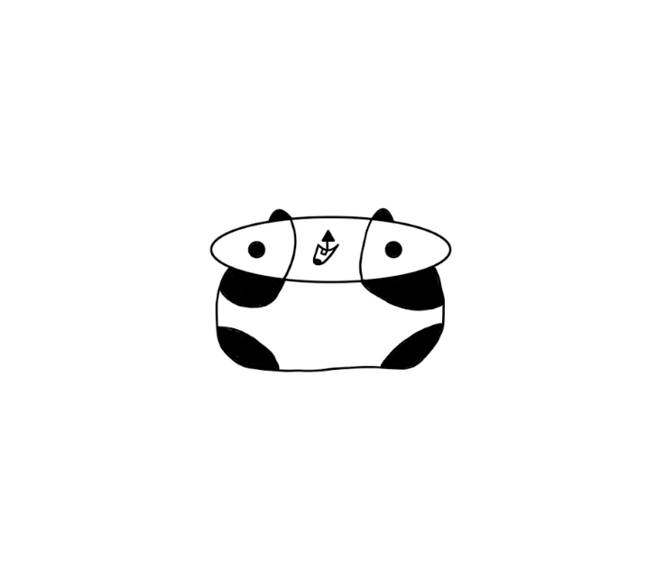
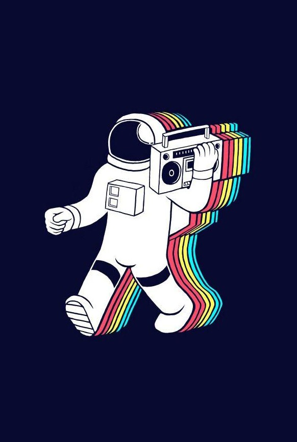
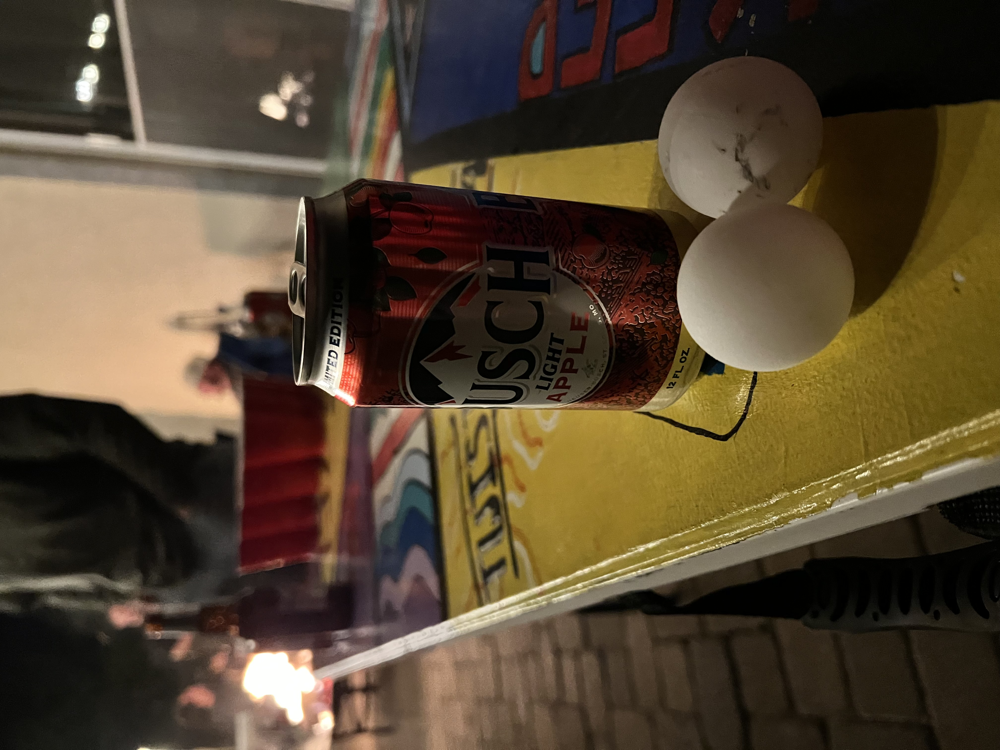

A LITTLE BIT ABOUT ME
Heyo, everybody! I am Zlink Plays, a software engineer with experience
in advanced mathematics and journalism.
Aside from playing and reviewing video games, I love to read, write,
listen to music, and draw. I also have a strong love for movies, as well
as the outdoors!
With my skills and interests, I hope to find jobs that utilize my admiration
for full-stack web development, data analysis, as well as network security. While
this blog caters more to my journalism expertise, I would love to use it as a
stepping stone toward more video game careers like Q-A testing, game development,
and possibly game journalism for industry giants such as IGN.
I always love working with computers and enhancing my writing skills through stories
or these game reviews. Writing and computer science have been passions of mine for
a long time, and so being able to publish this site that caters to both is amazing.
I hope you all enjoy!
If you would like to follow me on Instagram and Patreon, you can do so by clicking the links down below. I also have a YouTube channel, so if you want to see more of my work, feel free to take a look by clicking the link grouped with the others down below.


